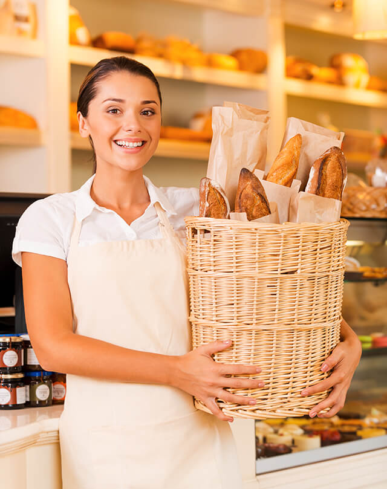

Our Story
If you find yourself in Long Beach, California, with a craving for something delicious to start your day, look no further than Morning People Bakery. This charming little spot is a haven for early risers who know that there’s nothing quite like the smell of freshly baked goods to kickstart the morning. The friendly staff at Morning People greet each customer with a warm smile and a tempting display of pastries, breads, and breakfast treats that are too good to resist. It’s a place where the coffee is always hot, the conversation is cheerful, and the baked goods are simply out of this world.
Morning people love their baked goods for good reason – there’s just something magical about a fresh-out-of-the-oven croissant or a perfectly flaky scone that sets a positive tone for the day. At Morning People Bakery, every item is made with love and the highest quality ingredients. The bakers here start their day while most of us are still dreaming, mixing doughs and prepping pastries so that when the sun rises, the bakery is filled with an irresistible aroma that draws in locals like a magnet. Whether it’s a buttery, golden croissant or a hearty slice of sourdough toast, these morning delights provide the perfect blend of comfort and satisfaction.
One of the best things about Morning People Bakery is its cozy, welcoming vibe. It’s the kind of place where regulars are known by name, and newcomers are quickly made to feel at home. Grab a seat by the window with a cappuccino and a warm cinnamon roll, and you’ll see why this spot has such a devoted following. The menu features a delightful mix of classic favorites and seasonal specials, ensuring that there’s always something new to try. And for those with dietary restrictions, Morning People has got you covered with a great selection of vegan and gluten-free options that don’t skimp on flavor.
Morning People Bakery isn’t just about great food – it’s about community. The bakery often hosts morning meet-ups, book clubs, and casual get-togethers that bring people together over a shared love of good food and good company. They also support local farmers and artisans by using locally sourced ingredients and featuring products from nearby vendors. This community-first approach not only makes Morning People a great place to eat but also a beloved fixture in Long Beach. So next time you’re up with the birds, head over to Morning People Bakery, where you’ll find more than just a meal – you’ll find a warm, welcoming start to your day.